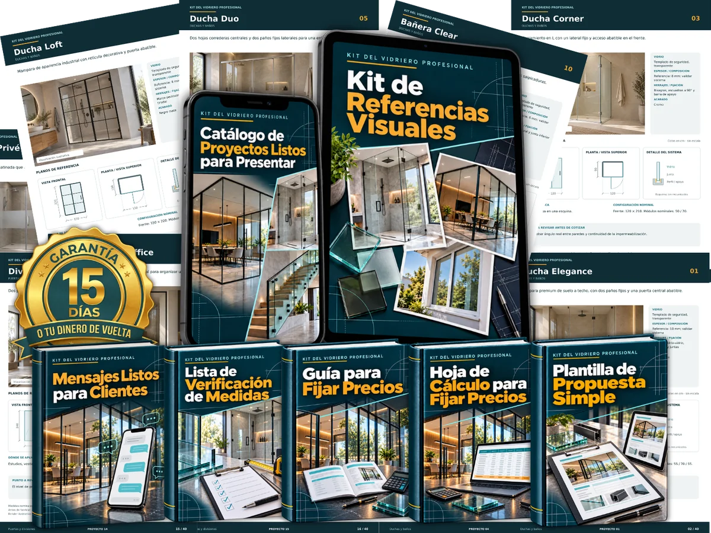
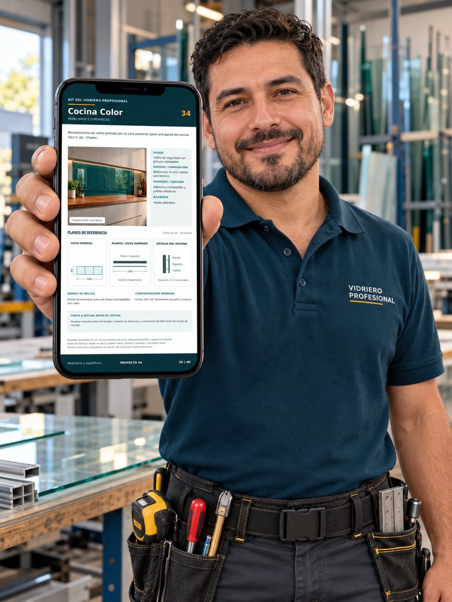
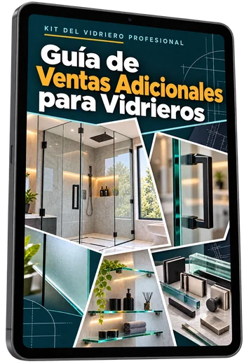
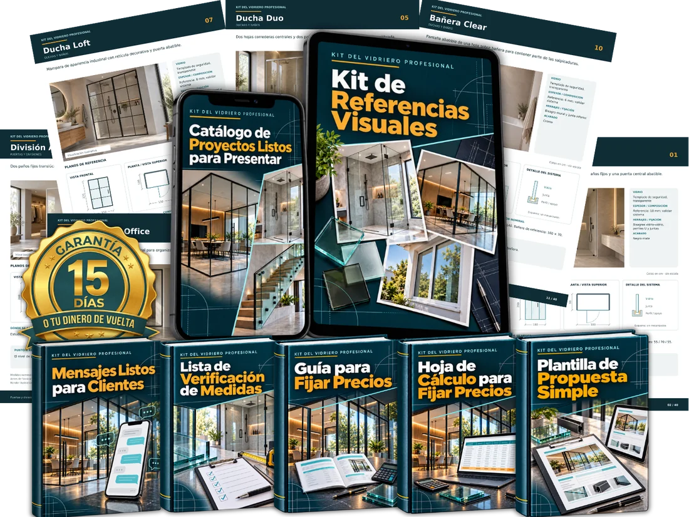

Presenta mejor tus servicios. Transmite más confianza. Dale al cliente razones para valorar tu trabajo antes de comparar solo precios.

Todo esto para que dejes de enviar solo una cifra y empieces a presentar tu servicio con más profesionalismo.
QUIERO PROFESIONALIZAR MIS COTIZACIONESDeja de depender solo de la conversación y empieza a mostrar referencias, opciones e información de forma más organizada.
Con el apoyo de la guía y la hoja de cálculo, tendrás una base más clara para definir tus precios sin depender solo del cálculo mental o de lo que te parezca.
Cuando el cliente entiende mejor el proyecto, puede visualizar con más facilidad qué está contratando.
La lista de verificación te ayuda a revisar los puntos importantes antes de avanzar con la cotización o realizar el trabajo.
Aprende a darle la vuelta a la situación cuando el cliente dice «está caro», «lo voy a pensar» o simplemente deja de responder.
Los materiales listos te ayudan a seguir una secuencia más clara en cada cotización, desde el primer contacto hasta el seguimiento final.
Cuanto mejor presentes, expliques y organices tu cotización, más fácil será que el cliente vea que está contratando mucho más que vidrio e instalación.
Está contratando a un profesional preparado.

Empieza a presentar tus servicios con más claridad, más organización y más profesionalismo.
Ten a tu alcance herramientas prácticas para presentar, fijar precios y negociar mejor cada cotización.
QUIERO PROFESIONALIZAR MIS COTIZACIONESMostrar referencias y opciones al cliente sin depender solo de explicaciones improvisadas.
Llevar la conversación con más claridad, organización y una actitud profesional.
Contar con apoyo para definir precios con más criterio y reducir la sensación de estar dando una cifra al azar.
Tener una lista de verificación práctica para revisar la información importante antes de avanzar con el trabajo.
Contar con ejemplos de mensajes para responder objeciones, retomar conversaciones y orientar mejor al cliente.
Dejar de resolverlo todo sobre la marcha y empezar a trabajar con materiales listos para apoyar cada etapa de la cotización.
Todo pensado para ayudarte a presentar, fijar precios y negociar tus servicios con menos improvisación y más profesionalismo.
Un material práctico para ayudarte a llevar la conversación cuando el cliente empieza a comparar solo precios.
Beneficio: te ayuda a dejar de centrar la conversación en quién cobra menos y volver a poner la atención en la calidad, la seguridad, los acabados y el valor del servicio.

Sugerencias prácticas para identificar oportunidades de ofrecer complementos, mejoras y soluciones adicionales durante la misma atención al cliente.
Beneficio: te ayuda a aumentar el valor de cada trabajo sin depender solo de conseguir más clientes.
Un paso a paso para realizar la visita al cliente con más organización, desde tu llegada hasta reunir toda la información necesaria para preparar la cotización.
Beneficio: te ayuda a transmitir más confianza, hacer mejores preguntas y realizar la visita de forma más profesional.
Complementan el Kit del Vidriero Profesional en tres aspectos importantes: mantener el valor de tu trabajo, aprovechar más oportunidades dentro del mismo servicio y mejorar la experiencia del cliente durante la visita.

Con el Kit del Vidriero Profesional, recibes:
Y además te llevas:
Para tener a tu alcance materiales que te ayuden a presentar mejor, calcular con más seguridad y gestionar tus cotizaciones con más profesionalismo.
QUIERO ACCEDER AL KIT DEL VIDRIERO PROFESIONALDespués de acceder al material, tendrás 15 días de garantía para revisar el contenido y comprobar si realmente se adapta a tu día a día.
Si durante ese período ves que el Kit del Vidriero Profesional no es para ti, podrás solicitar un reembolso de acuerdo con las condiciones de la garantía.
Así podrás tomar tu decisión con mucha más tranquilidad.
QUIERO ACCEDER AL KIT DEL VIDRIERO PROFESIONAL